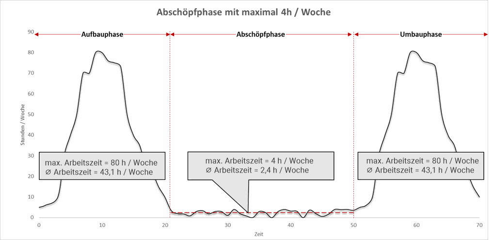

- Skills & Tools
- Safety & Risiko
Die '4-Stunden-Woche' als systemisches Risiko
Freiheit durch radikale Effizienz – das verspricht die 4-Stunden-Woche von Tim Ferriss. Die Versprechen sind jedoch riskant für Reputation und Tragfähigkeit des Geschäfts. Die vier Stunden beruhen auf systematischen Verkürzungen: Arbeit ist eng definiert, der Aufwand für Aufbau und Weiterentwicklung ausgeblendet, Produkte und Kunden stark trivialisiert. Unklar bleibt zudem, wie aufgeblähte Standardmethoden des Zeitmanagements zum behaupteten Geschäftserfolg beitragen; sie dienen eher als Füllstoff denn als notwendiges Handwerkszeug. Der Artikel ordnet die Postulate systemisch ein und zeigt die daraus entstehenden Risiken auf.